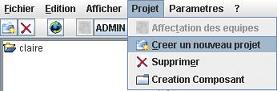
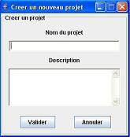

Créer un projet
Pré-Requis: Avoir le droit de création de projet fourni par l'administrateur
Dans le menu « Projet », choisir le menu « Créer un nouveau projet »

Indiquer le nom du projet, la description du projet est facultative.

Cliquer sur « Valider »